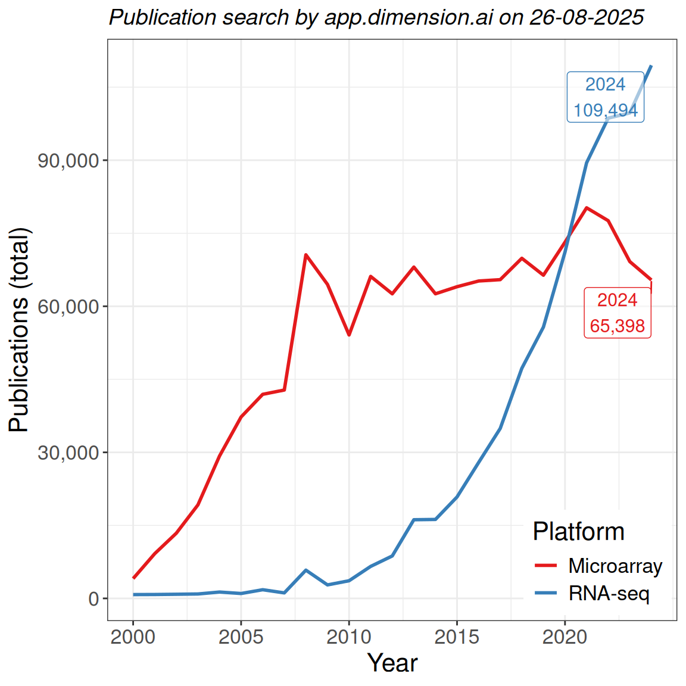
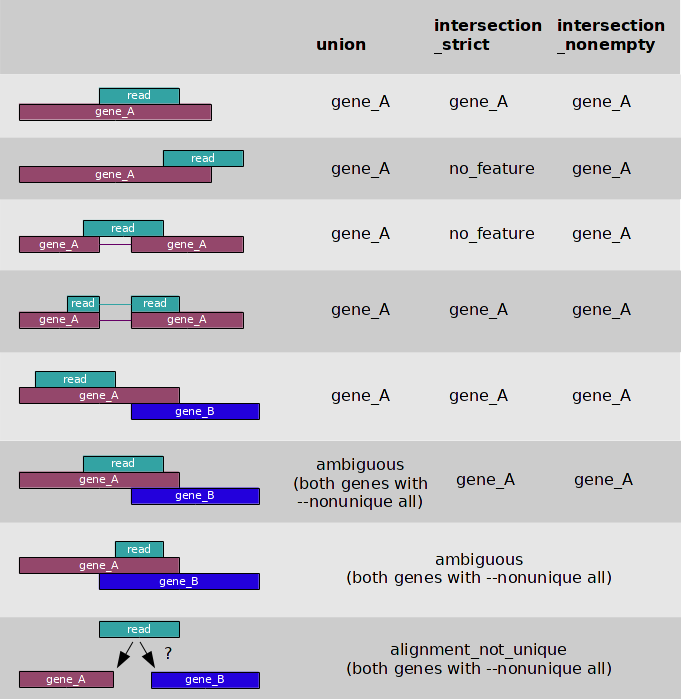

RNA Sequencing
Dr Stevie Pederson (They/Them)
stevie.pederson@thekids.org.au
stevie.pederson@thekids.org.au
Black Ochre Data Labs
The Kids Research Institute Australia
The Kids Research Institute Australia
Acknowledgement Of Country
I’d like to acknowledge the Kaurna people as the traditional owners and custodians of the land we know today as the Adelaide Plains, where I live & work.
I also acknowledge the deep feelings of attachment and relationship of the Kaurna people to their place.
I pay my respects to the cultural authority of Aboriginal and Torres Strait Islander peoples from other areas of Australia, and pay my respects to Elders past, present and emerging, and acknowledge any Aboriginal Australians who may be with us today
RNA Sequencing
According to Wang, Gerstein, and Snyder (2009)
RNA-Seq, also called RNA sequencing, is a particular technology-based sequencing technique which uses next-generation sequencing (NGS) to reveal the presence and quantity of RNA in a biological sample at a given moment, analyzing the continuously changing cellular transcriptome.
RNA Sequencing
- Microarrays are still published regularly
- Also used extensively for methylation
- RNA sequencing is now the dominant technology
- Strong improvement for:
- transcript-level resolution
- un-annotated genes
- genomic variants
- allelic bias
RNA Sequencing
- Microarrays rely on probes for transcripts defined at design time
- Restricted in the number of transcripts/genes targeted
- Arrays are confined for space
- Gencode 48 (GRCh38): 78,686 genes + 385,669 transcripts
- Probes capture non-specific binding
- Measuring a labelled cDNA: fluourescence \(\propto\) RNA abundace
These limitations do not exist for RNA-Seq
RNA Sequencing
- Directly sequence the biological material
- Map to most recent reference at any point in time
- Assemble a transcriptome (tissue specific)
- Detect InDels / SNPs in expressed sequences
- Multiple variations
- total-RNA or polyA transcripts \(\implies\) most similar to microarrays
- small-RNA libraries
- Long Reads (Oxford Nanopore, PacBio)
\(\implies\) originally isoform discovery, quantitative methods improving
The Key Steps
- Focus from here on will be sequencing mRNA using short reads
- Library Preparation
- RNA Quality assessment
(i.e. RNA degradation) - Selecting target molecules
- Adding sequencing primers
- RNA Quality assessment
- Sequencing
- Alignment
- Quantitation (i.e. counting)
- DE Gene Detection
- Downstream Analysis
PolyA-Based RNA Selection
- Select for poly-adenylated RNA using oligo-dT-based methods
- Only extracts intact mRNA with a polyA tail (includes some ncRNA)

Image from https://www.lexogen.com/polya-rna-selection-kit/
RNA Selection via rRNA Depletion
- Enzymatically deplete rRNA sequences
- rRNA targeted using probes \(\implies\) dsRNA degraded
- Can additionally target hbRNA (whole blood)

Image from https://support.illumina.com.cn
Library Preparation
- RNA is then fragmented and size selected (200-300nt)
- Very short transcripts always lost during this step
- cDNA produced
- Sequencing adapters added
- Indexes are unique to each individual library \(\implies\) always have replicates
- Optionally contain Unique Molecular Identifiers (UMI)
\(\implies\) Helps identify PCR duplicates
- Most RNA-Seq now retains strand-of-origin information (Stranded RNA-Seq)
- During PCR only the first cDNA template retained
Library Preparation

Image courtesy of https://www.lubio.ch/blog/ngs-adapters
Library Preparation
- Showing the full Y-adapter: Different combinations of indexes, UMI optional
Image courtesy of https://sg.idtdna.com
Sequencing

- Standard Illumina short-read sequencing protocol shown
- MGI uses different technology
Alignment To A Reference Genome
Reference Genome Alignment
- Sequencing data arrives as FastQ files
- Standard QC (
FastQC/fastp) - Optional Adapter Removal
- Standard QC (
- Alignment to a reference genome needs to be splice aware
- Usually indexed using a set of gene annotations
- Indexes are dependent on both genome version + annotation version
- Most common aligners are STAR (Dobin et al. 2013) & hisat2 (Kim et al. 2019)
- Alignments returned as SAM/BAM files
Gene Annotations
- Gene models are now well-annotated for model organisms
- US maintained: RefSeq; UCSC (https://genome.ucsc.edu)
- European maintained: EnsEMBL (https://www.ensembl.org/)
- Contain a mix of predicted and observed gene-models
- Human/Mouse also use Gencode (https://www.gencodegenes.org)
- Usually provided as GTF/GFF file
- Contains exon-, transcript- and gene-level annotations
- Co-ordinate-based, not sequence-based
Gene Quantitation
- After alignment to a reference gene \(\rightarrow\) count reads
- Leading to Differential Gene Expression analysis
- Multiple high-quality tools:
RSEM(Li and Dewey 2011),featureCounts(Liao, Smyth, and Shi 2014),htseq(Anders, Pyl, and Huber 2014)- Always use the same GTF used when indexing the genome
- Easy in theory but biology is often inconvenient
- Most alignments will neatly be within exons or across splice junctions
- Some are not
Gene Quantitation

How do we count:
- reads that only partially overlap an exon
- reads that map to multiple-locations (i.e. multi-mapping)
- reads where genes are on sense-antisense strand
- non-canonical splicing events
Gene Quantitation
- The region encoding a gene is (relatively) well defined
- An alignment within a gene is easy to assign to that gene
- Much more difficult to identify which transcript it came from

- Many transcripts share multiple exons
- Splice Junctions were the earliest approach
Count-Based Data
- For RNA-Seq: number of reads aligned to a gene \(\rightarrow\) gene expression
- Longer genes will return higher counts \(\implies\) not observed in microarrays
- These are discrete data (i.e. not continuous values)
- Microarrays were continuous values (fluorescence intensity)
- Modelled using log2-transformed values \(\implies \mathcal{N}(\mu, \sigma)\)
- Linear regression, \(t\)-tests etc
- Mean and variance are independent variables
Count-Based Data
- Count data is commonly modelled using a Poisson Distribution \(\implies \text{Poisson}(\lambda)\)
- Good example is number of phone calls per minute at a signal tower
- Cars per hour in an intersection
- Poisson Distributions define the variance as being equal to the mean
- i.e. \(\sigma^2 = \mu = \lambda \implies\)Mean and variance are not independent variables
Linear regression, \(t\)-tests etcGeneralised Linear Models (GLMs)
- Biology is inconvenient \(\implies\) for RNA-Seq counts \(\sigma^2 > \mu\) \(\implies\) overdispersion
- Need a different model \(\implies\) The Negative Binomial Distribution
- \(\sigma^2\), \(\mu\) will still be dependent!
Count-Based Data
- We use the Negative Binomial distribution to model counts (\(y_{gi}\)) for gene \(g\) in sample \(i\) (Lun, Chen, and Smyth 2016)
- The expected counts \(E(y_{gi}) =\mu_{gi}\)
- With overdispersed variance
\[ \text{var}(y_{gi}) = \sigma^2_g\left(\mu_{gi} +\phi\mu^2_{gi})\right), \text{where } \phi > 0 \]
- Can be thought of as like a Poisson Distribution with extra variation
- Extra variation is strictly defined in quadratic relationship to mean
- Sometimes described as a combination of technical & biological variation
Count-Based Data
- Fit NB generalised linear models (GLMs) to model counts and estimate logFC
- Implemented in edgeR (Chen, Lun, and Smyth 2016) and DESeq2 (Love, Huber, and Anders 2014)
- Slight differences in model-fitting
- Overdispersion (\(\phi\)) moderated in an analogous manner to variance for microarrays e.g. \(\phi = \phi(\mu_g)\)
- Both default to FDR-adjusted \(p\)-values
Count-Based Data
- Poisson/NB-GLMs fit the rate of an event, i.e. counts per fixed measurement window
- Sequencing data produces ‘libraries’ of counts \(\rightarrow\) total counts = library size
- In model fitting \(\rightarrow\) estimate rate as a function of library size
- TMM (edgeR) or RLE (DESeq2) approaches estimate scaling factors
- Moderates the effect of highly expressed genes which dominate library size
- e.g. Haemogloblin in blood samples can range between 30-60% of library
- In a perfect world \(\implies\) all scaling factors = 1
- Library size when modelling is multiplied by scaling factors
- The most effective normalisation methods for RNA-Seq
Count-Based Data
- A common alternative measure is counts per million (CPM) or logCPM
- Mainly used for visualisation not for analysis
- CPM is simply counts divided by (library size / 1,000,000)
- No longer discrete \(\implies\) continuous data
- Relationship between mean and variance still retained for logCPM
- Can’t use naively in classic
limma-based linear models
- Can’t use naively in classic
- The limma-voom method (Law et al. 2014) uses weights to break the mean-variance relationship
- Can assume normally-distributed logCPM values
- Alternatively, the
limma-trendworks effectively
Alternative Measure for RNA-Seq Counts
- Most designed to scale counts for length
- Gene length is constant across samples \(\implies\) not needed for analysis
- RPKM: Reads Per Kilobase of transcript per Million mapped reads
- Dominated early RNA-Seq analyses \(\implies\) No longer in common use
- Doesn’t handle different library compositions like TMM/RLE
- Effectively makes RPKM not comparable across samples
- FPKM was ‘Fragments Per Kilobase …’ \(\implies\) paired reads
- TPM: Transcripts Per Million
- Divides all counts by gene length
- Scales across genes so library size is 106 reads
- Only used for visualisation
Common Visualisation Techniques

- MA Plots show average expression (logCPM) against logFC
- Sometimes called smear plots
- Smoothed curve will highlight any bias
- Low-signal genes usually very noisy
Common Visualisation Techniques

- Volcano Plots show significance against logFC
- Developed during the microarray era
Alignment To A Reference Transcriptome
Reference Transcriptomes
- An alternative to using a reference genome + gene annotations
align to a reference transcriptome - No longer need splice-aware aligners
- Genome-based alignments (e.g. BAM files) no longer produced
- Many genes have multiple isoforms which share stretches of the same sequence
- Reads will commonly align to multiple transcripts
- Naive counting no longer viable
Reference Transcriptomes
- Two very similar approaches:
kallisto(Bray et al. 2016) pseudo-aligns to a de Bruijn graph \(\implies\) EM algorithm for countssalmon(Patro et al. 2017) aligns to reference \(\implies\) EM/VBEM algorithm for counts
- Counts are fitted values (i.e. estimates) based on observed alignments
- Are transcript-level counts
- Alignments are downsampled & bootstrapped \(\implies\) estimate of confidence in counts
Reference Transcriptomes
- Many transcripts within a gene share multiple exons
- Bootstraps provide confidence estimates for difficult/complicated transcripts
Image taken from Yu et al. (2015)
Differential Transcript Analysis
- Dividing counts by bootstrap estimates \(\implies\) Negative Binomial distribution (Baldoni et al. 2024)
- Standard NB-GLMs applicable
- Distribution not yet defined otherwise
- Transcript proportions within genes is alternative approach (Soneson, Love, and Robinson 2015)
- Summing transcript counts to gene counts \(\implies\) no need for bootstrap estimates
References
Anders, Simon, Paul Theodor Pyl, and Wolfgang Huber. 2014. “HTSeq—a Python Framework to Work with High-Throughput Sequencing Data.” Bioinformatics 31 (2): 166–69. https://doi.org/10.1093/bioinformatics/btu638.
Baldoni, Pedro L, Yunshun Chen, Soroor Hediyeh-Zadeh, Yang Liao, Xueyi Dong, Matthew E Ritchie, Wei Shi, and Gordon K Smyth. 2024. “Dividing Out Quantification Uncertainty Allows Efficient Assessment of Differential Transcript Expression with edgeR.” Nucleic Acids Res. 52 (3): e13.
Bray, Nicolas L, Harold Pimentel, Páll Melsted, and Lior Pachter. 2016. “Near-Optimal Probabilistic RNA-Seq Quantification.” Nat. Biotechnol. 34 (5): 525–27.
Chen, Yunshun, Aaron T L Lun, and Gordon K Smyth. 2016. “From Reads to Genes to Pathways: Differential Expression Analysis of RNA-Seq Experiments Using Rsubread and the edgeR Quasi-Likelihood Pipeline.” F1000Res. 5 (June): 1438.
Dobin, Alexander, Carrie A Davis, Felix Schlesinger, Jorg Drenkow, Chris Zaleski, Sonali Jha, Philippe Batut, Mark Chaisson, and Thomas R Gingeras. 2013. “STAR: Ultrafast Universal RNA-Seq Aligner.” Bioinformatics 29 (1): 15–21.
Kim, Daehwan, Joseph M Paggi, Chanhee Park, Christopher Bennett, and Steven L Salzberg. 2019. “Graph-Based Genome Alignment and Genotyping with HISAT2 and HISAT-Genotype.” Nat. Biotechnol. 37 (8): 907–15.
Law, Charity W, Yunshun Chen, Wei Shi, and Gordon K Smyth. 2014. “Voom: Precision Weights Unlock Linear Model Analysis Tools for RNA-Seq Read Counts.” Genome Biol. 15 (2): R29.
Li, Bo, and Colin N Dewey. 2011. “RSEM: Accurate Transcript Quantification from RNA-Seq Data with or Without a Reference Genome.” BMC Bioinformatics 12 (August): 323.
Liao, Yang, Gordon K Smyth, and Wei Shi. 2014. “featureCounts: An Efficient General Purpose Program for Assigning Sequence Reads to Genomic Features.” Bioinformatics 30 (7): 923–30.
Love, Michael I., Wolfgang Huber, and Simon Anders. 2014. “Moderated Estimation of Fold Change and Dispersion for RNA-Seq Data with DESeq2.” Genome Biology 15: 550. https://doi.org/10.1186/s13059-014-0550-8.
Lun, Aaron T L, Yunshun Chen, and Gordon K Smyth. 2016. “It’s DE-Licious: A Recipe for Differential Expression Analyses of RNA-Seq Experiments Using Quasi-Likelihood Methods in edgeR.” Methods Mol. Biol. 1418: 391–416.
Patro, Rob, Geet Duggal, Michael I Love, Rafael A Irizarry, and Carl Kingsford. 2017. “Salmon Provides Fast and Bias-Aware Quantification of Transcript Expression.” Nat. Methods 14 (4): 417–19.
Soneson, Charlotte, Michael I Love, and Mark D Robinson. 2015. “Differential Analyses for RNA-Seq: Transcript-Level Estimates Improve Gene-Level Inferences.” F1000Res. 4 (1521): 1521.
Sung, Jonghoo, Kate R Barratt, Stephen M Pederson, Chantal Chenu, Ines Reichert, Gerald J Atkins, Paul H Anderson, and Peter J Smitham. 2023. “Unbiased Gene Expression Analysis of the Delayed Fracture Healing Observed in Zucker Diabetic Fatty Rats.” Bone Joint Res. 12 (10): 657–66.
Wang, Zhong, Mark Gerstein, and Michael Snyder. 2009. “RNA-Seq: A Revolutionary Tool for Transcriptomics.” Nat. Rev. Genet. 10 (1): 57–63.
Yu, Nancy Yiu-Lin, Björn M. Hallström, Linn Fagerberg, Fredrik Ponten, Hideya Kawaji, Piero Carninci, Alistair R. R. Forrest, et al. 2015. “Complementing Tissue Characterization by Integrating Transcriptome Profiling from the Human Protein Atlas and from the FANTOM5 Consortium.” Nucleic Acids Research 43 (14): 6787–98. https://doi.org/10.1093/nar/gkv608.